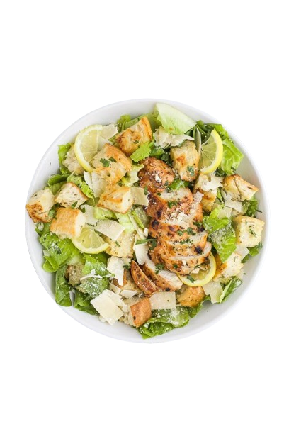

caeser salad
Caesar salad is made with romaine lettuce, croutons, Parmesan cheese, and Caesar dressing.
------------
any category of the food could be modified and have a wide range a food , this refer to the owner of
the cook book demand
------------
any category of the food could be modified and have a wide range a food , this refer to the owner of
the cook book demand